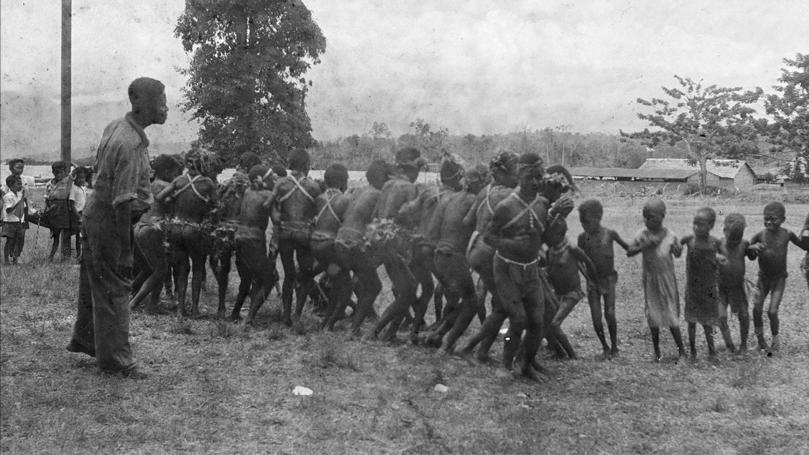
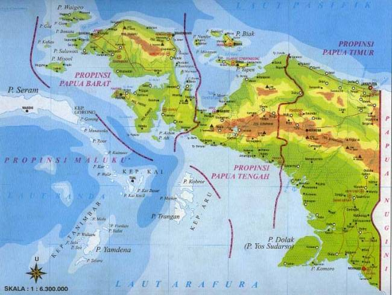
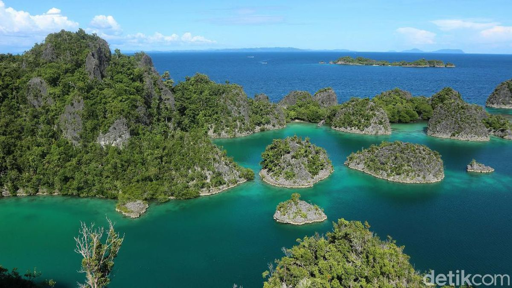

Papua merupakan pulau terbesar kedua di dunia setelah Greenland.

Papua telah dihuni oleh masyarakat Melanesia selama puluhan ribu tahun. Pada masa kolonial, wilayah ini berada di bawah kekuasaan Belanda dengan nama Nederlands Nieuw-Guinea. Setelah Indonesia merdeka, status Papua menjadi bagian dari perundingan internasional hingga akhirnya pada tahun 1963 pengelolaan wilayah diserahkan kepada Indonesia.
Pada tahun 1969 dilaksanakan Penentuan Pendapat Rakyat (Pepera), yang hasilnya menetapkan Papua menjadi bagian dari Indonesia. Peristiwa ini masih menjadi topik yang diperdebatkan oleh berbagai pihak dari sudut pandang sejarah dan politik.
Saat ini Papua dikenal sebagai wilayah yang kaya akan sumber daya alam, budaya, serta keindahan alam. Pemerintah terus mengembangkan infrastruktur, pendidikan, kesehatan, dan perekonomian di Papua, sembari menjaga kelestarian lingkungan dan keberagaman budaya masyarakat adat.

Papua terletak di bagian paling timur Indonesia dan berbatasan langsung dengan Papua Nugini di sebelah timur. Di sebelah utara berbatasan dengan Samudra Pasifik, sedangkan di sebelah selatan berbatasan dengan Laut Arafura.
Wilayah Papua didominasi oleh pegunungan, hutan hujan tropis, rawa-rawa, dan pesisir yang luas. Salah satu bentang alam yang paling terkenal adalah Pegunungan Jayawijaya, tempat berdirinya Puncak Jaya, gunung tertinggi di Indonesia dengan ketinggian sekitar 4.884 meter di atas permukaan laut.
Papua memiliki iklim tropis dengan curah hujan yang tinggi sepanjang tahun. Kondisi geografis ini menjadikan Papua sebagai salah satu wilayah dengan keanekaragaman hayati terbesar di dunia, serta menjadi habitat berbagai flora dan fauna endemik, seperti burung cenderawasih dan kanguru pohon.

Papua memiliki banyak destinasi wisata alam yang terkenal karena keindahan dan keasliannya.
Dikenal memiliki keanekaragaman hayati laut tertinggi di dunia dan menjadi surga bagi penyelam.
Selain Raja Ampat, terdapat Taman Nasional Lorentz yang merupakan situs Warisan Dunia UNESCO dengan ekosistem yang lengkap, mulai dari pantai hingga pegunungan bersalju. Lembah Baliem juga menjadi tujuan wisata budaya yang terkenal karena tradisi masyarakat Suku Dani dan pemandangan pegunungannya yang indah.
Wisata lain yang menarik di Papua antara lain Danau Sentani, Pantai Base-G, dan Teluk Cenderawasih yang menjadi habitat hiu paus. Keindahan alam, kekayaan budaya, serta keramahan masyarakat menjadikan Papua sebagai salah satu destinasi wisata unggulan di Indonesia.